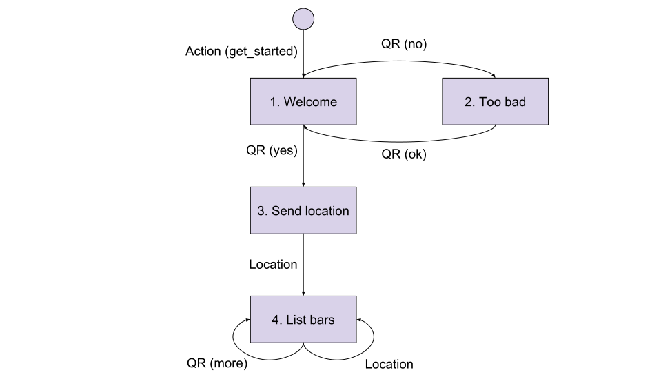

Finite-state Machines¶
Finite-state Machines (herafter shortened to “FSM”) are an abstract machine that is widely used because it’s a simple way to describe a process. Wikipedia will tell you all about the maths and definitions but here’s we’ll focus on what matters for BERNARD.
Basically, a FSM is a set of states which are connected to each other by transitions. At any moment, the machine is at exactly one state. When an event occurs, it will trigger a transition and move to another state.
Sample conversation¶
Let’s consider the following conversation:
- User: clicks “Get Started”
- Bot: Welcome John, I will help you find bars! But before, do you accept my terms of service?
- User: No (quick reply)
- Bot: Fine. You can accept later by saying “OK”.
- User: OK (quick reply)
- Bot: Great! Please send me your location
- User: Location
- Bot: Awesome, here’s bars near your location: […].
FSM model¶
This can be modeled as follows:

- The squares are states. When the bot enters a state (and only then) it can send messages to the user.
- The arrows are triggers. It’s the possible actions that the user can do to trigger a transition from one state to the other.
- The small disc on top is the initial state.
Triggers can only be activated if the current state is its starting
point. By exemple, if the user sends his location right at 1. nothing
will happen while it would trigger a transition if it was in 3. or
4..
Triggers starting from the initial state are always candidates, even if the user is currently engaged in a conversation. This allows the user to jump from one feature to another without having to exhaust the flow.
In the current case, if the user clicked “Get Started” again while seeing bars, the conversation would start again.
Probabilistic model¶
One thing with user interactions is that you can’t always be 100% sure of what they mean, espcially if you do NLU. In BERNARD, each trigger will emit a probability that a given user action matches what the trigger expects. Then BERNARD will select the most likely trigger and go with it.
Wrap-up¶
FSMs are a simple way to describe a conversation. They have states which are connected by triggers. Triggers will be activated by user actions based on a probabilistic model. This is what drives transitions between states. And finally, the initial state is a meta-state which is always considered onto which you can attach the starting points of your scenarii.
Next step: installation